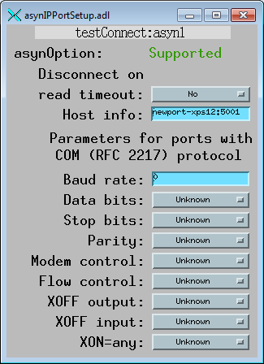

asyn Record
Mark Rivers and Marty Kraimer
Contents
Overview
The asyn record is designed to provide access to nearly all of the features of the
asyn facility. It includes the ability to:
- Perform I/O to any asyn device that supports the asynOctet, asynInt32, asynUInt32Digital,
and/or asynFloat64 interfaces.
- Allow EPICS to communicate with a new device without rebooting the IOC, i.e. without
writing any C code or changing the database. This allows Channel Access clients
to communicate with devices for which no EPICS device support exists.
- In combination with the scalcout record to format output strings and to parse
response strings, eliminate the need for C device support code in many applications.
- Dynamically change the asyn device "port" and "address", so a single asyn record
can be switched from talking to one device to another at run time.
- Dynamically change the asyn interface being used for I/O.
- Manage the connection state of a device, i.e. connect/disconnect, enable/disable,
autoConnect/noAutoConnect..
- Provide access to asynTrace, controlling debugging output for any asyn device.
- Control the the baud rate, parity, etc. for serial ports whose drivers support
the asynOption interface.
- Control the GPIB address and execute global and addressed commands for GPIB devices.
For the asynOctet interface there are two output fields, AOUT (ASCII Output) and
BOUT (Byte Output). The OFMT (Output Format) field is used to select one of these
fields or the other as the output source to the device. Similarly, there are two
input fields, AINP (ASCII Input) and BINP (Byte Input). The IFMT (Input Format)
field is used to select one or the other as the destination of data sent from the
device. The ASCII fields are type DBF_STRING, and are very convenient for typical
communication with many devices. They permit, for example, medm screens
where the user can type a string and observe the response from the instrument. The
ASCII fields, however are limited to 40 characters in length, and cannot be used
to read or write binary data. The byte input and output fields are DBF_CHAR arrays,
and can be used to transfer large blocks of arbitrary data, either ASCII or binary.
In the "Access" columns in the field description tables:
|
R |
Read only |
|
|
R/W |
Read and write are allowed |
|
|
R/W* |
Read and write are allowed; write triggers record processing if the record's SCAN
field is set to "Passive". |
|
|
N |
No access allowed |
|
Device Address Control Fields
|
Name |
Access |
Prompt |
Data type |
Description |
|
PORT |
R/W |
"asyn port" |
DBF_STRING |
The asyn "port" name. This field can be changed at any time to connect the record
to another asyn device. |
|
ADDR |
R/W |
"asyn address" |
DBF_LONG |
The asyn address. This field can be changed at any time to connect the record to
another asyn device. |
|
PCNCT |
R/W |
"Port Connect/Disconnect" |
DBF_MENU |
Disconnects or connects the port. Choices are "Disconnect" and "Connect". The value
read reflects whether there is currently a valid connection to a port. |
|
DRVINFO |
R/W |
"Driver information" |
DBF_STRING |
A string that is passed to the driver with asynDrvUser->create(), assuming that
the asynDrvUser interface exists. The driver will update pasynUser->reason and/or
pasynUser->drvUser as a result. If pasynUser->reason is changed then the asynRecord
REASON field will be updated. |
|
REASON |
R/W |
"Reason or command" |
DBF_LONG |
A integer "reason" or "command" that is typically used to tell the driver what item
to read or write. This value is updated when connecting to the driver, using the
DRVINFO field. It can be changed later without reconnecting to the driver. If REASON
is changed then the DRVINFO field will be set to an empty string. |
The asyn record does not have traditional INP or OUT fields for input and output
links. Rather it provides the PORT and ADDR fields to allow dynamically changing
what asyn device the record is connected to.
Writing to the PORT, ADDR or DRVINFO fields causes the asyn record to disconnect
from the current device and connect to the specified asyn port and address. This
permits a single asyn record to be used to control any asyn device. Writing to these
fields does not cause any I/O to be done.
Note that since writing to the PORT, ADDR, or DRVINFO fields cause the record to
automatically attempt to connect to the port, it is usually not necessary to write
to the PCNCT field to connect to the port. The PCNCT field is useful for determining
if the port is connected, and for forcing a disconnect if desired.
|
Name |
Access |
Prompt |
Data type |
Description |
|
VAL |
R/W |
"Value field (unused)" |
DBF_STRING |
This field is unused. The functions normally assigned to the VAL field in many records
are performed by the AOUT, BOUT, AINP, BINP, I32OUT, I32INP, UI32OUT, UI32INP, F64OUT,
and F64INP fields in the asyn record. |
|
TMOD |
R/W |
"Transaction mode" |
DBF_MENU |
The type of I/O transaction to perform when the record is processed. The choices
are:
|
"Write/Read" (default) |
|
"Write" |
|
"Read" |
|
"Flush" |
|
"NoI/O" |
|
|
IFACE |
R/W |
"Interface" |
DBF_MENU |
The interface to use for the I/O transfer when the record processes. The choices
are:
|
"asynOctet" (default) |
|
"asynInt32" |
|
"asynUInt32Digital" |
|
"asynFloat64" |
|
|
OCTETIV |
R |
"Octet Is Valid" |
DBF_LONG |
This field is (1,0) if the driver (does,does not) support the asynOctet interface.
|
|
I32IV |
R |
"Int32 Is Valid" |
DBF_LONG |
This field is (1,0) if the driver (does,does not) support the asynInt32 interface.
|
|
UI32IV |
R |
"UInt32Digital Is Valid" |
DBF_LONG |
This field is (1,0) if the driver (does,does not) support the asynUInt32Digital
interface. |
|
F64IV |
R |
"Float64 Is Valid" |
DBF_LONG |
This field is (1,0) if the driver (does,does not) support the asynFloat64 interface.
|
|
OPTIONIV |
R |
"Option Is Valid" |
DBF_LONG |
This field is (1,0) if the driver (does,does not) support the asynOption interface.
|
|
GPIBIV |
R |
"GPIB Is Valid" |
DBF_LONG |
This field is (1,0) if the driver (does,does not) support the asynGPIB interface.
|
|
TMOT |
R/W |
"Timeout (sec)" |
DBF_DOUBLE |
The timeout value for read and write operations in seconds. If a response is not
received from the device within this time then the record sets a major alarm. -1.0
means wait forever, no timeout. Default=1.0 |
The TMOD field controls what type of I/O is performed when the record processes.
|
"Write/Read" (default) |
The output data is sent from the selected output field to the device. A response
is then read back into the selected input field. The response must be received within
the time specified by TMOT. For asynOctet the input buffer is flushed before the
write operation, so that any characters received prior to the write operation are
discarded. The Write/Read operation is "atomic", meaning that it is guaranteed that
no other asyn I/O to the device will occur between the write and read operations.
|
|
"Write" |
The output source is sent to the device. No response is read back. |
|
"Read" |
Data is read from the device into the input field. The response must be received
within the time specified by TMOT. No output is sent to the device prior to the
read operation. |
|
"Flush" |
The input buffer is flushed. Nothing is sent to the device or read from the device.
Applies only to asynOctet. |
|
"NoI/O" |
The record processes but no I/O is actually performed. This mode can be used as
a safety feature when using an asyn record to just control the trace fields of asyn
ports. If the record is in this mode and is accidentally processed, then no I/O
will occur. |
Output Control Fields for asynOctet
These fields control output I/O when using the asynOctet interface (i.e. when IFACE="asynOctet").
|
Name |
Access |
Prompt |
Data type |
Description |
|
AOUT |
R/W* |
"Output string" |
DBF_STRING |
The output string which is sent to the device if OFMT="ASCII". The number of bytes
sent to the device will be strlen(AOUT) plus strlen(OEOS).
|
|
BOUT |
R/W* |
"Output byte data" |
DBF_CHAR (array) |
The output data which is sent to the device if OFMT="Binary" or "Hybrid". The maximum
length of this field is controlled by OMAX. The actual number of bytes to be sent
to the device when OFMT="Hybrid" will be strlen(BOUT) plus strlen(OEOS).
The actual number of bytes to be sent to the device when OFMP="Binary" will
be NOWT. |
|
OEOS |
R/W |
"Output terminator" |
DBF_STRING |
A character string that is appended to the output before transmission to the device.
This field is ignored if OFMT="Binary". Set this field to "" to suppress transmission
of a terminator. Commonly used values are "\r" (the default), "\n", and "\r\n".
|
|
OMAX |
R |
"Max. size of output array" |
DBF_LONG |
The allocated length of the BOUT array. This value cannot be changed after IOC initialization.
Default=80. |
|
NOWT |
R/W |
"Number of bytes to write" |
DBF_LONG |
The number of bytes to send from the BOUT array to the device if OFMT="Binary".
This value must be less than or equal to OMAX. Default=80. |
|
NAWT |
R/W |
"Number of bytes actually written" |
DBF_LONG |
The actual number of bytes written in the last write operation. This field is valid
for all OFMT modes. This number does not include the output terminator, if any.
|
|
OFMT |
R/W |
"Output format" |
DBF_MENU |
The output format. The choices are:
|
"ASCII "(default) |
The data sent to the device will be taken from the AOUT field. |
|
"Hybrid" |
The data sent to the device will be taken from the BOUT field. |
|
"Binary" |
The data sent to the device will be taken from the BOUT field. |
|
There are two output fields, AOUT (ASCII Output) and BOUT (Byte Output). The OFMT
(Output Format) field is used to select one of these fields or the other as the
output source to the device.
If OFMT="ASCII" then the AOUT field is processed with dbTranslateEscape() to convert
control characters (e.g. "\r", "\021") to bytes, the length of the output is determined
with strlen(), and the string is sent to the device using asynOctet->write. This
will append the output EOS if one has been set.
If OFMT="Hybrid" then the BOUT field is processed with dbTranslateEscape() to convert
control characters (e.g. "\r", "\021") to bytes, the length of the output is determined
with strlen(), and the string is sent to the device using asynOctet->write. This
will append the output EOS if one has been set.
If OFMT="Binary" then NOWT bytes from the BOUT field are sent to the device using
asynOctet->write. This will not append an output EOS.
OEOS is set to the current value for the port when the record connects to the port.
If OEOS is modified after the record connects to the port, then the output EOS will
be changed using asynOctet->setOutputEos. IMPORTANT: The value of OEOS in the
database file is never used, because it is modified when the record connects to
the port.
These fields control input I/O when using the asynOctet interface (i.e. when IFACE="asynOctet").
|
Name |
Access |
Prompt |
Data type |
Description |
|
AINP |
R |
"Input string" |
DBF_STRING |
The input string that is read from the device if IFMT="ASCII". The string will be
null terminated. Note that due to the maximum size of a string in EPICS, the input
string must be less than 40 characters. If longer strings are required then set
IFMT="Hybrid" and read into the BINP field. |
|
BINP |
R |
"Input byte data" |
DBF_CHAR (array) |
The input data that is read from the device if IFMT="Hybrid" or IFMT="Binary". The
maximum length of this field is controlled by IMAX. The actual number of bytes read
from the device is given by NORD. |
|
IEOS |
R/W |
"Input terminator" |
DBF_STRING |
A string that indicates the end of a message on input. Set this field to """ if
no input terminator should be used. This field is ignored if IFMT="Binary". Commonly
used values are "\r" (the default), "\n", and "\r\n". The input terminator is removed
from the input buffer after the read. |
|
IMAX |
R |
"Max. size of input array" |
DBF_LONG |
The allocated length of the BINP array. This value cannot be changed after IOC initialization.
Default=80. |
|
NRRD |
R/W |
"Number of bytes to read" |
DBF_LONG |
The requested number of bytes to read. This field is valid for all IFMT modes. If
this field is <= 0, then the requested number of bytes to read will be the EPICS
defined MAX_STRING_SIZE=40 (if IFMT="ASCII") or IMAX (if IFMT="Hybrid" or "Binary").
Default=0. |
|
NORD |
R |
"Number of bytes read" |
DBF_LONG |
The actual number of bytes read in the last read operation. This field is valid
for all IFMT modes. This number includes the input terminator, if any. |
|
IFMT |
R/W |
"Input format" |
DBF_MENU |
The input format. The choices are:
|
"ASCII" (default) |
The data read from the device will be placed in the AINP field. |
|
"Hybrid" |
The data read from the device will be placed in the BINP field. |
|
"Binary" |
The data read from the device will be placed in the BINP field. |
|
|
TINP |
R |
"Translated input" |
DBF_CHAR (array) |
This field will contain up to the first 40 characters of the AINP or BINP fields
(depending on IFMT), after translation with epicsStrSnPrintEscaped, to convert non-printable
characters to a printable form (e.g. \r, \n, etc.) |
There are two input fields, AINP (ASCII Input) and BINP (Byte Input). The IFMT (Input
Format) field is used to select one or the other as the destination of data sent
from the device.
A read operation terminates when any 1 of the following 4 conditions is met:
- The input terminator (IEOS) is found (if IFMT="ASCII" or "Hybrid")
- EOI asserted (GPIB only)
- The desired number of input characters (NRRD) are received
- The timeout (TMOT) expires
If IFMT="ASCII" then input is read into the AINP field with asynOctet->read.
This will remove the input EOS string, if any, and AINP will be NULL terminated
if possible.
If IFMT="Hybrid" then the input is read into the BINP field with asynOctet->read.
This will remove the input EOS string, if any, and BINP will be NULL terminated
if possible.
If IFMT="Binary" then the input is read into the BINP field using asynOctet->read.
This will ignore the input EOS. BINP will be null terminated.
The TINP field is intended for operator display. It will contain up to the first
40 characters of the input read into AINP (if IFMT="ASCII") or BINP (if IFMT="Hybrid"
or "Binary"). Non-printable characters are first converted to a printable form using
epicsStrSnPrintEscaped. This field should not normally be using for parsing the
response from the device. This is the field that is shown as the ASCII input field
in the medm display asynRecord.adl. It is useful for displaying the device response,
even in "Hybrid" and "Binary" input modes.
The IEOS terminator field is 40 characters long. However, the serial drivers permit
2 character end-of-message strings at most. The GPIB drivers only permit 1 character
end-of-message strings.
IEOS is set to the current value for the port when the record connects to the port.
If IEOS is modified after the record connects to the port, then the input EOS will
be changed using asynOctet->setInputEos. IMPORTANT: The value of IEOS in the
database file is never used, because it is modified when the record connects to
the port.
These fields control I/O when using the register interfaces (i.e. when IFACE="asynInt32",
"asynUInt32Digital", or "asynFloat64").
|
Name |
Access |
Prompt |
Data type |
Description |
|
I32INP |
R |
"asynInt32 input" |
DBF_LONG |
The input data that is read from the device if IFACE="asynInt32" and TMOD="Read"
or "Write/Read". |
|
I32OUT |
R/W* |
"asynInt32 output" |
DBF_LONG |
The data that is sent to the device if IFACE="asynInt32" and TMOD="Write" or "Write/Read".
|
|
UI32INP |
R |
"asynUInt32Digital input" |
DBF_ULONG |
The input data that is read from the device if IFACE="asynUInt32Digital" and TMOD="Read"
or "Write/Read". |
|
UI32OUT |
R/W* |
"asynUInt32Digital output" |
DBF_ULONG |
The data that is sent to the device if IFACE="asynUInt32Digital" and TMOD="Write"
or "Write/Read". |
|
UI32MASK |
R/W |
"asynUInt32Digital mask" |
DBF_ULONG |
The mask that is used if IFACE="asynUInt32Digital". The mask is used for both write
and read operations. Only bits that are set in mask will be modified on writes,
and any bits that are clear in mask will be zero on read. |
|
F64INP |
R |
"asynFloat64 input" |
DBF_DOUBLE |
The input data that is read from the device if IFACE="asynFloat64" and TMOD="Read"
or "Write/Read". |
|
F64OUT |
R/W* |
"asynFloat64 output" |
DBF_DOUBLE |
The data that is sent to the device if IFACE="asynFloat64" and TMOD="Write" or "Write/Read".
|
Serial Control Fields
|
Name |
Access |
Prompt |
Data type |
Description |
|
BAUD |
R/W |
"Baud rate" |
DBF_MENU |
The baud rate for the port. Choices are "Unknown", "300", "600", "1200", "2400",
"4800", "9600", "19200", "38400", "57600", "115200", "230400", 460800, 576000, 921600,
and 1152000. Default="Unknown". Note that BAUD field is limited to 16 choices because
it is of type DBF_MENU. The LBAUD field can be used to select baud rates that are
not available in the BAUD menu. |
|
LBAUD |
R/W |
"Baud rate (long)" |
DBF_LONG |
The baud rate for the port as an integer. This field allows selecting any baud rate,
including those not available in the BAUD menu field. Changing the BAUD field will
change the LBAUD field accordingly. Changing the LBAUD field will change the BAUD
field to the appropriate menu choice if possible, or to "Unknown" if that baud rate
is not in the menu. |
|
PRTY |
R/W |
"Parity" |
DBF_MENU |
The device parity. Choices are "Unknown", "None", "Even", and "Odd". Default="Unknown".
|
|
DBIT |
R/W |
"Data bits" |
DBF_MENU |
The number of data bits. Choices are "Unknown", "5", "6", "7", and "8". Default="Unknown".
|
|
SBIT |
R/W |
"Stop bits" |
DBF_MENU |
The number of stop bits. Choices are "Unknown", "1" and "2". Default="Unknown".
|
|
MCTL |
R/W |
"Modem Control" |
DBF_MENU |
Modem control. Choices are "Unknown", "CLOCAL" and "YES". Default="Unknown". |
|
FCTL |
R/W |
"Flow control (cts rts)" |
DBF_MENU |
Flow control. Choices are "Unknown", "None" and "Hardware". Default="Unknown". Hardware
means to use the cts (clear to send) and rts (request to send) signals |
|
IXON |
R/W |
"Output XOFF/XON" |
DBF_MENU |
XOFF/XON control on output. Choices are "Unknown", "No" and "Yes". Default="Unknown".
If the IOC receives an XOFF character, it suspends output until an XON character
is received. |
|
IXOFF |
R/W |
"Input XOFF/XON" |
DBF_MENU |
XOFF/XON control on input. Choices are "Unknown", "No" and "Yes". Default="Unknown".
The IOC sends XOFF and XON characters as necessary to prevent input from coming
in faster than programs are reading it. The external device sending the input data
must respond to an XOFF character by suspending transmission, and to an XON character
by resuming transmission. |
|
IXANY |
R/W |
"XON=any character" |
DBF_MENU |
Choices are "Unknown", "No" and "Yes". Default="Unknown". Allows any input character
to restart output when output has been suspended with the XOFF character. Otherwise,
only the XON character restarts output. This flag is not available on all systems,
including WIN32. |
The above fields are used to set the serial port parameters. A write to any of these
fields causes the port parameters to be changed immediately, but does not cause
any I/O to be performed. The port parameters can currently be set only for local
serial ports, including IP-Octal on vxWorks. They cannot currently be set for Ethernet/serial
adapters like the Moxa units.
The "Unknown" choice for each option is used on readback if the driver does not
support that option. "Unknown" should not be written into the field.
The baud rates actually available are device dependent. For the SBS IP-Octal module
the maximum baud rate is 38400.
These record fields are set to the values currently in effect for the port when
the connection to the port is made. IMPORTANT: The value of these fields in the
database file is never used, because it is modified when the record connects to
the port.
vxWorks and MCTL,FCTL. The sioLib serial support for vxWorks uses CLOCAL for what
POSIX calls CTSRTS (Clear to send and request to send). It does not appear that
sioLib has any concept of modem control, which is what POSIX calls CLOCAL. For vxWorks
the standard serial support for asynDriver supplied in drvAsynSerialPort.c, accepts
both MCTL and FCTL. MCTL=(CLOCAL,YES) is the same as FCTL=(None,Hardware).
IP Control Fields
|
Name |
Access |
Prompt |
Data type |
Description |
|
DRTO |
R/W |
"Disconnect on Read Timeout" |
DBF_MENU |
Choices are "Unknown", "No" and "Yes". Default="No". If Yes then the IP port will
be disconnected on a read timeout. |
|
HOSTINFO |
R/W |
"IP port hostInfo" |
DBF_STRING |
The IP port hostInfo string with the same syntax as the drvAsynIPPortConfigure command
i.e. host:port[:localport] [protocol]. |
Writing to the HOSTINFO field will cause the drvAsynIPPort driver to disconnect
from the current host (if any) and then attempt to connect to the new host.
If the drvAsynIPPort was created with the COM (RFC 2217) protocol then the serial
control fields listed above can be used to control those settings on ther Ethernet/serial
adapter.
GPIB Control Fields
|
Name |
Access |
Prompt |
Data type |
Description |
|
SPR |
R |
"Serial Poll Response" |
DBF_UCHAR |
The device status byte, which is read during a Serial Poll operation. |
|
UCMD |
R/W* |
"Universal command" |
DBF_MENU |
A GPIB Universal Command to be executed. . The choices are:
|
"None" |
|
"Device Clear (DCL)" |
|
"Local Lockout (LL0)" |
|
"Serial Poll Disable (SPD)" |
|
"Serial Poll Enable (SPE)" |
|
"Unlisten (UNL)" |
|
"Untalk (UNT)" |
|
|
ACMD |
R/W* |
"Addressed command" |
DBF_MENU |
A GPIB Addressed Command to be executed. The choices are:
|
"None" |
|
"Group Execute Trig. (GET)" |
|
"Go To Local (GTL)" |
|
"Selected Dev. Clear (SDC)" |
|
"Take Control (TCT)" |
|
"Serial Poll" |
|
GPIB Universal Commands are commands which are directed to all devices on the GPIB
bus, not just addressed devices. If the UCMD field is set to any value except "None"
then the appropriate Universal Command is executed, and UCMD is set back to "None".
The record processing only performs the Universal Command, i.e. it does not also
perform the GPIB operation indicated by TMOD.
GPIB Addressed Commands are commands which are directed to only the addressed devices
on the GPIB bus. If the ACMD field is set to any value except "None" then the appropriate
Addressed Command is executed, and ACMD is set back to "None". The record processing
only performs the Addressed Command, i.e. it does not also perform the GPIB operation
indicated by TMOD.
Trace Control Fields
|
Name |
Access |
Prompt |
Data type |
Description |
|
TMSK |
R/W |
"Trace mask" |
DBF_LONG |
The asynTraceMask. |
|
TB0 |
R/W |
"Trace error" |
DBF_MENU |
The ASYN_TRACE_ERROR bit. Choices are "Off" and "On". |
|
TB1 |
R/W |
"Trace IO device" |
DBF_MENU |
The ASYN_TRACEIO_DEVICE bit. Choices are "Off" and "On". |
|
TB2 |
R/W |
"Trace IO filter" |
DBF_MENU |
The ASYN_TRACEIO_FILTER bit. Choices are "Off" and "On". |
|
TB3 |
R/W |
"Trace IO driver" |
DBF_MENU |
The ASYN_TRACEIO_DRIVER bit. Choices are "Off" and "On". |
|
TB4 |
R/W |
"Trace flow" |
DBF_MENU |
The ASYN_TRACE_FLOW bit. Choices are "Off" and "On". |
|
TB5 |
R/W |
"Trace warning" |
DBF_MENU |
The ASYN_TRACE_WARNING bit. Choices are "Off" and "On". |
|
TIOM |
R/W |
"Trace I/O mask" |
DBF_LONG |
The asynTraceIOMask. |
|
TIB0 |
R/W |
"Trace IO ASCII" |
DBF_MENU |
The ASYN_TRACEIO_ASCII bit. Choices are "Off" and "On". |
|
TIB1 |
R/W |
"Trace IO escape" |
DBF_MENU |
The ASYN_TRACEIO_ESCAPE bit. Choices are "Off" and "On". |
|
TIB2 |
R/W |
"Trace IO hex" |
DBF_MENU |
The ASYN_TRACEIO_HEX bit. Choices are "Off" and "On". |
|
TINM |
R/W |
"Trace Info mask" |
DBF_LONG |
The asynTraceInfoMask. |
|
TINB0 |
R/W |
"Trace Info Time" |
DBF_MENU |
The ASYN_TRACEINFO_TIME bit. Choices are "Off" and "On". |
|
TINB1 |
R/W |
"Trace Info Port" |
DBF_MENU |
The ASYN_TRACEINFO_PORT bit. Choices are "Off" and "On". |
|
TINB2 |
R/W |
"Trace Info Source" |
DBF_MENU |
The ASYN_TRACEINFO_SOURCE bit. Choices are "Off" and "On". |
|
TINB3 |
R/W |
"Trace Info Thread" |
DBF_MENU |
The ASYN_TRACEINFO_THREAD bit. Choices are "Off" and "On". |
|
TSIZ |
R/W |
"TraceIO truncate size" |
DBF_LONG |
The parameter passed to asynTraceSetTraceIOTruncateSize(). This value is used to
limit the number of I/O bytes printed by traceIO. |
|
TFIL |
R/W |
"Trace IO file" |
DBF_STRING |
The name of the file to which trace information is printed. |
The above fields are used to control the asynTrace facility. They allow one to turn
on and off debugging output printed at the shell or written to the trace file.
The TMSK field allows one to read/write the entire asynTraceMask word. The TB0-TB5
fields allow one to read/write the individual bits in asynTraceMask. The TIOM field
allows one to read/write the entire asynTraceIOMask word, and the TIB0-TIB2 fields
allow one to read/write the individual bits in asynTraceIOMask. The TINM field allows
one to read/write the entire asynTraceInfoMask word, and the TINB0-TINB3 fields
allow one to read/write the individual bits in asynTraceInfoMask.
When the asyn record is connected to a new device with the PORT and ADDR fields
the above trace fields are automatically updated to reflect the current asynTrace,
asynTraceIO, and asynTraceInfo masks for that device.
The TFIL field is used to set the name of the trace file. It is not possible for
the asyn record to determine the current file name if the record did not set it.
In this case the file name is displayed as "Unknown". Set this field to a string
file name (including possibly a valid path from the IOC's current default directory)
to have the output written to that file. The following values are handled as special
cases:
- <stdout> - Write to standard out.
- <stderr> - Write to standard error.
- <errlog> - Use the errlog facility.
Connection Management Fields
|
Name |
Access |
Prompt |
Data type |
Description |
|
AUCT |
R/W |
"Autoconnect" |
DBF_MENU |
Sets the autoconnect option. Choices are "noAutoConnect" and "autoConnect". The
value read reflects current state of the autoconnect flag, i.e. the value returned
from isAutoConnect(). |
|
ENBL |
R/W |
"Disable/Enable" |
DBF_MENU |
Disables or enables the port. Choices are "Disable" and "Enable". The value read
reflects current state of the enabled flag, i.e. the value returned from isEnabled().
|
|
CNCT |
R/W |
"Connect/Disconnect" |
DBF_MENU |
Disconnects or connects the device. Choices are "Disconnect" and "Connect". The
value read reflects current state of the connected flag, i.e. the value returned
from isConnected(). |
Error Status Fields
|
Name |
Access |
Prompt |
Data type |
Description |
|
ERRS |
R |
"Error status" |
DBF_STRING |
Error status string for the most recent operation. This string is set to "" (null
string) at the start of each connection and I/O operation. |
|
AQR |
W |
"About queueRequest" |
DBF_CHAR |
Abort queueRequest. If a process request has been queued but not delivered it is
canceled, the record is put into alarm and record completion occurs. |
The ERRS field is set to "" (null string) at the start of every operation, including
trace and connection management operations. It contains the first 100 characters
of any error message the record writes with asynPrint(...ASYN_TRACE_ERROR...).
The standard EPICS record fields STAT (status) and SEVR (severity) are used to report
the I/O error status. For example status field may be set to NO_ALARM, WRITE, READ,
or COMM, and the SEVR field may be set to NO_ALARM, MINOR, or MAJOR. These alarm
fields are only used to report I/O errors or errors when connecting to a new PORT
or ADDR. They are not affected by trace or connection management operations.
Private Fields
|
Name |
Access |
Prompt |
Data type |
Description |
|
IPTR |
N |
"Input buffer pointer" |
DBF_NOACCESS |
The pointer to the buffer for the BINP field. |
|
OPTR |
N |
"Output buffer pointer" |
DBF_NOACCESS |
The pointer to the buffer for the BOUT field. |
Record Processing
The asyn record processes, i.e. performs the I/O operation given by TMOD, according
to the normal rules for EPICS records. The AOUT, BOUT, I32OUT, UI32OUT, and F64OUT
fields are Process Passive, so the record will process if these fields are written
to and the SCAN field of the record is Passive. The scan field of the record can
be set to any of the periodic scan rates (e.g. "1 second") for periodic processing,
to "Event" for event processing, or to "I/O Intr" for I/O interrupt processing.
"I/O Intr" scanning is fully supported for drivers that provide callbacks.
If the SCAN field is "I/O Intr" it will be changed to "Passive" when any of the
following fields are modified: PORT, ADDR, DRVINFO, REASON, IFACE, or UINT32MASK.
This is necessary because changes to these fields require re-registering with the
interrupt source.
Obsolete serial and GPIB records
The asyn record is designed to be a complete replacement for the older generic serial
("serial") and generic GPIB ("gpib") records. These records are no longer needed,
and will not be supported in the future. The following is a list of the differences
between the old serial and GPIB records and the new asyn record which may require
changes to databases or applications.
- The ODEL field has been replaced by OEOS. It has changed from a DBF_LONG to DBF_STRING
in order to support multi-character terminators.
- The IDEL (serial) and EOS (gpib) fields have been replaced by IEOS. They have
changed from a DBF_LONG to DBF_STRING in order to support multi-character terminators.
- The INP field has been replaced by the PORT and ADDR fields in order to support
run-time connection to different devices.
- The AOUT and OEOS fields are processed by dbTranslateEscape before being sent
to the device. In rare cases this may require changing the output strings if these
contained the "\" character.
- The asyn record always posts monitors on the input field (AINP or BINP) when the
record processes. The older records did not post monitors on the AINP field if the
value was the same as the previous read. This caused problems for some SNL programs
and data acquisition applications.
- The ODEL and IDEL fields were used even when OFMT or IFMT were in "Binary" mode.
OEOS and IEOS are now ignored when OFMT or IFMT respectively are in "Binary" mode.
- The ODEL and IDEL fields were always used to set the input and output end of string.
The IEOS and OEOS fields now are now initialized to the current EOS settings for
the port when the record connects. IEOS and OEOS only change the EOS settings if
these fields are modified after the record connects to the port. Thus, it is now
important to initialize the EOS strings for the port correctly in the startup script.
- The TMOT field has changed from DBF_LONG to DBF_DOUBLE, and the units have changed
from milliseconds to seconds. TMOT=-1.0 now means wait forever.
medm screens
The following are screen shots of the medm screens provided for the asyn record.
Main control screen, asynRecord.adl

asynOctet I/O screen, asynOctet.adl

asyn register device I/O screen, asynRegister.adl

Serial port setup screen, asynSerialPortSetup.adl

IP port setup screen, asynIPPortSetup.adl

GPIB setup screen, asynGPIBSetup.adl

Example #1
The following is an IDL program that demonstrates the use of the asyn record. It
transfers data in both ASCII and binary formats. Hopefully the IDL syntax is clear
enough to be understood by non-IDL users, and can be translated into your favorite
scripting language.
; This IDL program demonstrates the use of the EPICS asyn record.
; The program uses 2 asyn records. The ports corresponding to these
; 2 records are connected with a null-modem cable
; Record 1 sends a message to record 2 in ASCII.
; Record 2 sends a message back to record 1 in binary.
; Record names
rec1 = '13LAB:serial2'
rec2 = '13LAB:serial3'
recs = [rec1, rec2] ; Array with both record names
; Set up port parameters for both records:
; 19,200 baud, 8 data bits, 1 stop bit, no parity, no flow control
; Timeout=1 second
for i=0, 1 do begin
rec = recs[i]
t = caput(rec+'.BAUD', '19200')
t = caput(rec+'.DBIT', '8')
t = caput(rec+'.SBIT', '1')
t = caput(rec+'.PRTY', 'None')
t = caput(rec+'.FCTL', 'None')
t = caput(rec+'.TMOT', 1.0)
endfor
; Put record 1 in ASCII output mode, <CR> output delimiter,
; binary input mode, no input delimiter
t = caput(rec1+'.OFMT', 'ASCII')
t = caput(rec1+'.OEOS', '\r')
t = caput(rec1+'.IFMT', 'Binary')
t = caput(rec1+'.IEOS', '')
; Put a monitor on record 1 Binary input field
t = casetmonitor(rec1+'.BINP')
; Clear the monitor by reading the value
t = caget(rec1+'.BINP', junk)
; Put record 2 in Binary output mode, no output delimiter
; ASCII input mode, <CR> input delimiter
t = caput(rec2+'.OFMT', 'Binary')
t = caput(rec2+'.OEOS', '')
t = caput(rec2+'.IFMT', 'ASCII')
t = caput(rec2+'.IEOS', '\r')
; Put record 2 in read transfer mode
t = caput(rec2+'.TMOD', 'Read')
; Put a monitor on record2 ASCII input field
t = casetmonitor(rec2+'.AINP')
; Clear the monitor by reading the value
t = caget(rec2+'.AINP', junk)
; Process record 2; this will cause it to wait for data
t = caput(rec2+'.PROC', 1)
; Put record 1 in Write transfer mode
t = caput(rec1+'.TMOD', 'Write')
; Send a message to port 2
message = 'Request data: '+string(systime())
print, 'Record 1 sent message: ' + message
t = caput(rec1+'.AOUT', message)
; Wait for monitor on record2 ASCII input field
while (not cacheckmonitor(rec2+'.AINP')) do wait, .1
; Read data from record 2
t = caget(rec2+'.AINP', input)
print, 'Got a message from record 1: ', input
size=256
; Put record 1 in read mode, expect "size" byte input
t = caput(rec1+'.TMOD', 'Read')
t = caput(rec1+'.NRRD', size)
; Process record 1; this will cause it to wait for data
t = caput(rec1+'.PROC', '1')
; Put record 2 in write mode
t = caput(rec2+'.TMOD', 'Write')
; Send an 8 bit binary sin wave, "size" points long from
; port 2 to port 1
send_data = byte(sin(findgen(size)/5)*126 + 127)
t = caput(rec2+'.NOWT', size)
t = caput(rec2+'.BOUT', send_data)
; Wait for monitor on channel 1 binary input
while (not cacheckmonitor(rec1+'.BINP')) do wait, .1
; Record 1 should have received "size" bytes. Make sure NORD=size
t = caget(rec1+'.NORD', nord)
if (nord eq size) then $
print, 'Read array data OK' $
else $
print, 'Error reading array data!'
; Read data from record 1
t = caget(rec1+'.BINP', rec_data, max=nord)
; Plot it
plot, rec_data
end
Example #2
The following is an IDL procedure that demonstrates the use of the asyn record to
communicate with a Tektronix TDS200 Digital Oscilloscope. It transfers data in both
ASCII and binary formats. It will work with either an RS-232 or GPIB connection
to the scope. The record must be loaded with IMAX at least large enough to read
the waveform. The entire waveform readout is 2500 channels on the TDS220. The buffer
size required is 1 byte per channel + 7 bytes header/checksum. The start and stop
parameters to the procedure can be used to read a subset of the waveform.
Hopefully the IDL syntax is clear enough to be understood by non-IDL users, and
can be translated into your favorite scripting language.
pro read_tds200, record, data, start=start, stop=stop, chan=chan
; This procedure reads waveforms from the Tektronix TDS200 series scopes
; Mark Rivers
; Modifications:
; March 7, 2001 Correctly put record in Write and Write/Read modes.
; Dec. 7, 2001 Set timeout to 2 seconds before read.
; March 30, 2004 Change IFMT from Binary to Hybrid, other fixes.
if (n_elements(start) eq 0) then start=1
if (n_elements(stop) eq 0) then stop=2500
if (n_elements(chan) eq 0) then chan=1
chan = 'CH'+strtrim(chan,2)
aout = record + '.AOUT'
binp = record + '.BINP'
tmod = record + '.TMOD'
ifmt = record + '.IFMT'
binp = record + '.BINP'
nord = record + '.NORD'
tmot = record + '.TMOT'
oeos = record + '.OEOS'
ieos = record + '.IEOS'
; Set the terminators to newline (assumes scope is set up this way)
t = caput(oeos, '\n', /wait)
t = caput(ieos, '\n', /wait)
; Set the transfer mode to write
t = caput(tmod, 'Write', /wait)
; Set the encoding to positive binary, start and stop readout channels
; Set the readout range. Can't do as one command, exceed 40 characters
command = 'DATA:ENC RPB; DATA:START ' + strtrim(start,2)
t = caput(aout, command, /wait)
command = 'DATA:STOP ' + strtrim(stop,2)
t = caput(aout, command, /wait)
;Set DATa:WIDth to 2
;command = 'DATA:WIDTH 2'
;t = caput(aout, command, /wait)
;Set channel number
command = 'DATA:SOURCE '+ strtrim(chan,2)
t = caput(aout, command, /wait)
; Set the input mode to hybrid. Large buffer but line-feed terminator
t = caput(ifmt, 'Hybrid', /wait)
; Set the transfer mode to write/read
t = caput(tmod, 'Write/Read', /wait)
; Empirically the timeout needs to be about 5 seconds for
; 1024 channels with RS-232
t = caput(tmot, 5.0)
; Read the scope
t = caput(aout, 'Curve?', /wait)
; Get the data
t = caget(binp, data)
; Check the number of bytes read. See if it's what's expected
n_data = stop-start+1
n_header = 2 + strlen(strtrim(n_data, 2))
n_checksum = 1
n_expected = n_header + n_data + n_checksum
t = caget(nord, n)
if (n ne n_expected) then $
print, 'Scope returned:', n, $' bytes, expected: ', n_expected
; The first n_header bytes are header, the last byte is checksum.
; Data are offset by 127, convert to long
data = data[n_header:n-2] - 127L
return
end